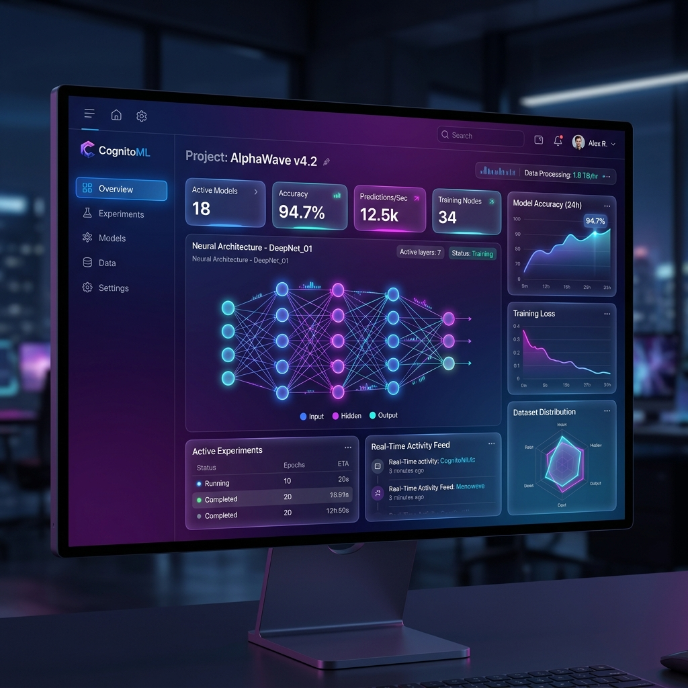

Dandothkar
Manik Prabhu
Strategic and results-driven Senior Marketing & Delivery Manager with 5.4+ years of cross-functional expertise driving enterprise B2B lead generation, demand generation, revenue acceleration, and scalable technical delivery across SaaS, Cloud, and AI ecosystems.
Professional Profile
Bridging the gap between high-level B2B commercial strategy and technical engineering execution.
Empowering Enterprise Growth Through Agentic AI & Multi-Cloud Delivery
I scale corporate revenue pipelines by combining 5.4+ years of B2B marketing & demand generation with deep technical engineering capabilities. Proven track record of generating predictable multi-million-dollar sales pipelines and closing nearly $1M in high-value enterprise contracts.
My background blends 2.5+ years of high-volume Cold Calling, advanced Email Deliverability Administration (DNS authentication, SPF/DKIM/DMARC, inbox warm-up, spam/blacklist remediation), and SEO with hands-on systems engineering—architecting Agentic AI workflows (LangGraph, LangChain, LangSmith, MCP), building Python/FastAPI microservices, and orchestrating multi-cloud deployments (AWS primary, GCP, Azure) via Docker, Kubernetes, and GitHub Actions CI/CD.
Executive Focus Areas
- B2B Growth & Revenue Acceleration: Outbound prospecting frameworks, consultative sales cadences, account-based marketing (ABM), and multi-million-dollar pipeline generation.
- Agentic AI & Workflow Automation: Designing and deploying autonomous AI agent workflows with LangGraph, LangChain, LangSmith, and Model Context Protocol (MCP) for real-time lead intelligence.
- Multi-Cloud & API Architecture: Developing asynchronous Python/FastAPI microservices and containerized deployments across AWS, GCP, and Azure using Docker, Kubernetes, and CI/CD pipelines.
- Email Infrastructure & Deliverability: Managing multi-domain DNS authentication (SPF, DKIM, DMARC), inbox warm-up schedules, spam/blacklist remediation sustaining 98%+ deliverability.
- Technical Delivery Management: Aligning service scope roadmaps, client expectation mapping, and leading cross-functional engineering and growth squads.
The D.I.R.T. Framework
My proprietary methodology uniting engineering rigor with outbound commercial acceleration.
Data Acquisition & Intelligence
High-precision B2B prospect mining using forward proxy networks, custom scraping routines, and intent-based analytics across enterprise directories.
Infrastructure & Deliverability
Bulletproofing email pipelines and data integrity. Setting up multi-domain DNS (SPF, DKIM, DMARC), warm-up cadences, and database sanitization.
Revenue-Driven Outreach
Consultative multi-channel campaigns targeting C-suite decision-makers through high-volume cold calling, personalized InMail cadences, and ABM.
Technological AI Delivery
Scaling operations with autonomous AI workflows, Python/FastAPI microservices, Model Context Protocol (MCP), and multi-cloud Kubernetes deployments.
Interactive Skills Matrix
Explore my cross-functional expertise across growth strategy, AI engineering, and cloud operations.
B2B Lead & Demand Generation (5.4+ Yrs)
High-Volume Cold Calling (2.5+ Yrs)
Email Deliverability & DNS (SPF/DKIM/DMARC)
Personalized LinkedIn & InMail Outreach
Client Delivery & Scope Roadmapping
SEO, Case Studies & Technical Blogs
Python Development
FastAPI (Async Microservices)
Forward Proxy & Network Routing
SQL & NoSQL Databases
Power BI & CRM Analytics
Advanced Excel & Data Modeling
LangGraph & LangChain Orchestration
Model Context Protocol (MCP)
LangSmith Monitoring & Eval
Autonomous Agent Workflows & N8N
Machine Learning & Deep Learning
MLOps & System Reliability
AWS Cloud (EC2, S3, IAM, VPC)
Google Cloud Platform (GCP Core)
Microsoft Azure Ecosystem
Docker & Containerization
Kubernetes (K8s) Orchestration
GitHub Actions CI/CD & Terraform
ZoomInfo, Apollo.io & Lusha
Salesforce & Microsoft Dynamics 365
N8N Workflows & Automation
Git & GitHub Version Control
VS Code, AntiGravity, Cline & Claude
Professional Chronology
A proven track record of managing high-performance teams and executing multi-million dollar deliveries.
Senior Marketing & Delivery Manager
Digio Click- Direct technical delivery operations and marketing strategy, translating client business requirements into structured service deliverables and technical milestones.
- Design and deploy autonomous AI agent workflows using LangGraph, LangChain, LangSmith, and N8N, reducing turnaround cycle time by 35% for client reporting and high-intent lead qualification.
- Architect and maintain scalable microservices with FastAPI (Async APIs) and orchestrate containerized deployments on AWS and Azure using Docker, Kubernetes, and GitHub Actions CI/CD pipelines.
- Configure forward proxy networks and automated data extraction pipelines to ensure high-speed, secure, and uninterrupted sales intelligence gathering.
- Spearhead client delivery management, aligning scope roadmaps and client expectation mapping across cross-functional engineering and growth teams.
Senior Inside Sales Manager
CompQsoft Digital- Managed and mentored a dedicated 5-member team of Inside Sales Representatives, instituting outbound prospecting frameworks, objection-handling cadences, and lead nurturing standards.
- Drove team performance to consistently achieve a monthly target of 25 qualified leads, building a predictable top-of-funnel pipeline for enterprise Cloud & Microsoft services.
- Generated 2 to 3 high-value Sales Qualified Opportunities (SQOs) per quarter targeting enterprise C-suite decision-makers with verified purchasing intent.
- Administered email infrastructure across multiple sender domains: configured DNS authentication (SPF, DKIM, DMARC), managed domain warm-up schedules, and resolved spam/blacklist issues sustaining 98%+ deliverability.
- Conducted in-depth case studies analysis and authored technical blogs optimized for SEO to drive organic inbound demand.
Senior Inside Sales Executive
CompQsoft Digital- Spearheaded outbound business development, strategic prospecting, and pipeline growth for enterprise IT, cloud infrastructure, and digital transformation solutions.
- Targeted high-potential utility, municipal infrastructure, and enterprise IT accounts, successfully positioning Microsoft-centric and next-gen technology services.
- Closed two major enterprise projects with a combined contract value of nearly $1,000,000 ($1M), exceeding key sales milestones and driving substantial revenue.
- Managed end-to-end sales cycles from cold discovery calls and product demos to objection handling, solution mapping, and contract handoffs.
- Built and presented comprehensive pipeline health dashboards and executive revenue reports using Power BI and CRM analytics.
Team Lead – B2B Growth & Inside Sales
Funnl (Funnl.ai)- Spearheaded outbound B2B sales development campaigns leveraging a hybrid model of AI-driven lead intelligence and human-in-the-loop inside sales execution.
- Managed and mentored a high-performing squad of nearly 10 team members, coaching them on advanced prospecting, cold calling discipline, and email marketing optimization.
- Led 2.5+ years of intensive B2B cold calling campaigns, generating 3–4 verified high-intent leads daily and exceeding monthly pipeline quotas by 120%.
- Owned end-to-end client onboarding for new B2B customers, defining target profiles (ICP), configuring campaign parameters, and setting up data extraction pipelines.
- Executed rigorous account data extraction and prospect enrichment utilizing ZoomInfo, Apollo.io, and Lusha to deliver verified enterprise lead datasets.
Associate Trainee
Funnl (Funnl.ai)- Mastered end-to-end B2B sales cycles, lead scoring methodologies, and Ideal Customer Profile (ICP) identification across mid-market and enterprise verticals.
- Conceptualized and mapped disparate data sources (CRM, marketing, and analytical APIs) into unified data streams to ensure data integrity and single-source-of-truth accuracy.
Featured Engineering Project
A deep dive into how I implement machine learning pipelines to solve complex business challenges.

ML Suite Platform
A high-end machine learning SaaS suite designed to automate the complete model lifecycle. The software provides non-technical growth executives and technical teams alike with visual ingestion portals, automated pre-processing charts, and hyperparameter grids to rapidly determine optimal training algorithms.
- Automated visual data-ingestion pipeline
- Hyperparameter grid search algorithm selector
- High-precision granular developer logging tools
- Dynamic responsive UI dashboard design
Academic Credentials
The academic foundations fueling my cross-functional expertise in business & technology.
Master of Business Administration (MBA) – Marketing
Focused on strategic B2B marketing, demand generation mechanics, client relationship management, and commercial analytics.
Bachelor of Commerce in Computer Applications – B.Com (CA)
Focused on computer applications, programming, database management systems (SQL), and quantitative business computing.
Connect & Collaborate
Looking to accelerate B2B demand generation or deploy intelligent AI delivery pipelines? Let's connect!
Direct Channels
Feel free to reach out directly through any of these verified communication nodes.
WhatsApp Direct Connect
Click below to start a direct WhatsApp conversation with Manik for immediate scheduling and inquiries.
Start WhatsApp Chat